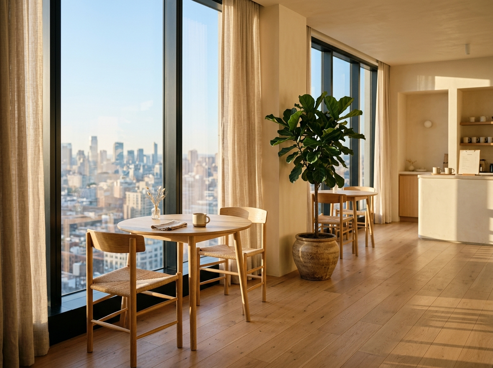
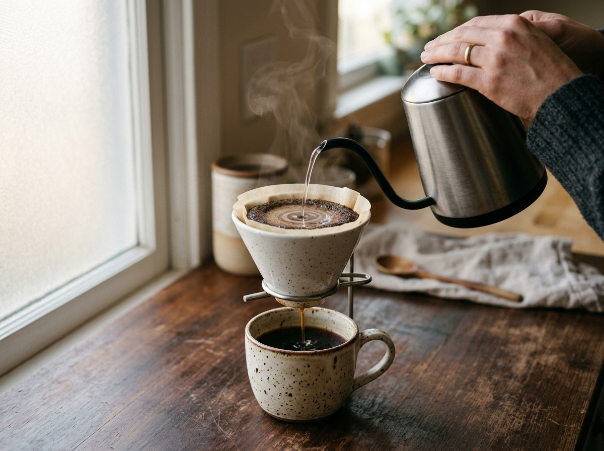
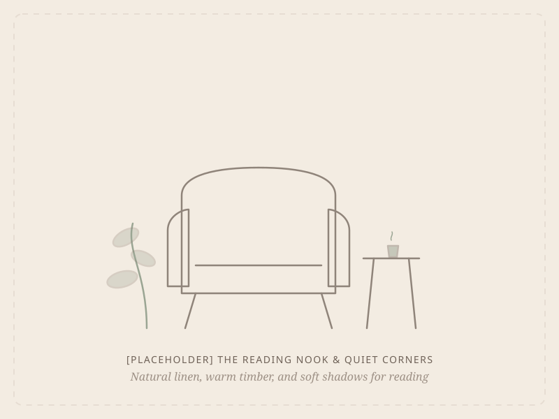
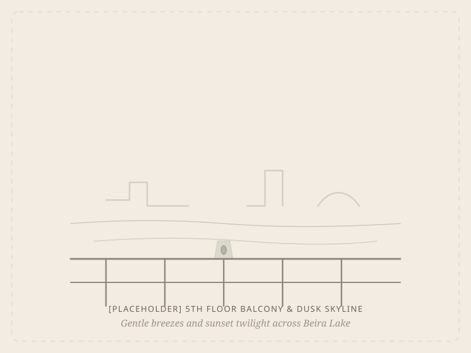

Highland V60 Pour-Over
Single OriginHand-poured through Japanese ceramic cone. Sourced from Kotmale [PLACEHOLDER]. Delivers gentle notes of wild blossom, dried fig, and raw honey.
Perched above Colombo’s rhythm, Mandora is an unhurried pause. We pour slow coffee, brew handpicked teas, and hold space for conversations that take their time.
Mandora was founded on a simple desire: to carve out a peaceful haven high above Colombo’s bustling streets — a place where the rich aroma of hand-poured coffee meets an unhurried, gentle silence.
We do not hurry our brews, and we will never rush your stay.— Mandora Philosophy
Perched on the 5th floor of the IBM Building, our windows overlook the quiet ripples of Beira Lake and the tree-lined avenues of Colombo 02. Every cup we serve is made with deliberate care: single-origin beans sourced responsibly from highland estates, roasted gently to celebrate their native fruit and honey notes.
From the cool touch of our custom handmade ceramics to the gentle hum of morning light, every detail is crafted to invite you to pause, sip, and exhale.
Highland beans roasted in small runs to preserve delicate nuances of stonefruit and roasted almond.
Wheel-thrown local pottery designed with comforting organic textures that cradle warmth in your palms.
No loud machines, no hurried turnaround. Bring your favorite novel or gaze at the clouds over Colombo.
"A good cup of coffee takes four minutes to brew and a lifetime of unhurried mornings to appreciate."
We designed Mandora as a calm counterweight to hurry. Sunlight filters through high windows, unbleached linen softens the afternoon glare, and our tables are spaced with generous breathing room.



